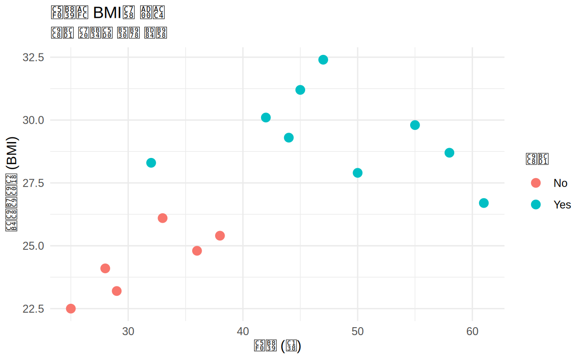
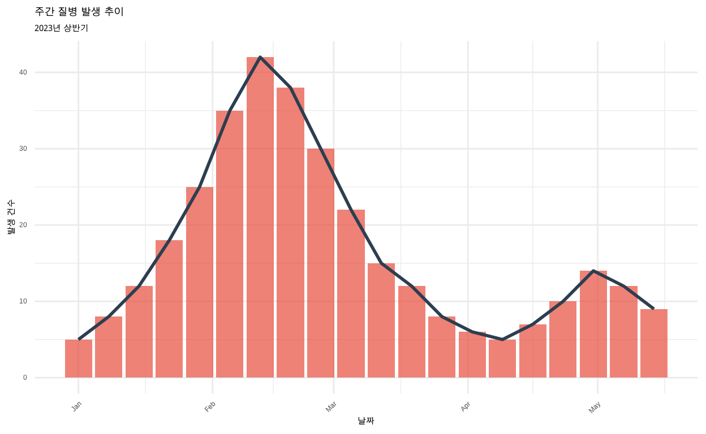
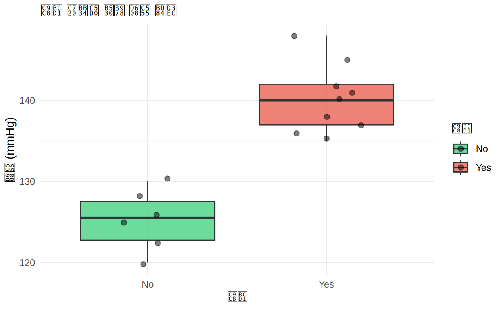
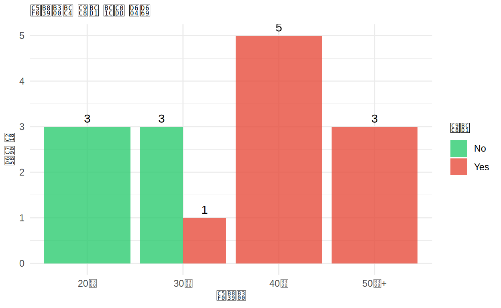

👤 학습자 인증
시작하기 전에 본인 인증을 진행해주세요. 학습 완료 시 인증서를 받을 수 있습니다! 🏆
간편 로그인
────── 또는 ──────
수동 입력
📊 환영합니다!
이 튜토리얼에서는 보건학, 역학, 임상통계를 위한 R 시각화 기초를 배웁니다.
학습 목표:
- ggplot2의 그래픽 문법(Grammar of Graphics) 이해
- 보건학 데이터 시각화 기법 습득
- 역학 및 임상 연구를 위한 그래프 작성
- 7가지 핵심 구성요소 마스터
이 과정을 마치면:
✅ 건강 데이터를 효과적으로 시각화할 수 있습니다 ✅ 유행곡선과 발병률 그래프를 그릴 수 있습니다 ✅ 논문 출판 수준의 그래프를 제작할 수 있습니다
🔤 한글 폰트 설정 안내
ggplot2에서 한글이 깨지는 경우, 아래 방법으로 해결할 수 있습니다.
방법 1: showtext 패키지 사용 (권장 - 모든 OS 공통)
# 패키지 설치 (최초 1회)
install.packages("showtext")
install.packages("sysfonts")
# 사용법
library(showtext)
library(sysfonts)
# Google Fonts에서 한글 폰트 추가
font_add_google("Noto Sans KR", "NotoSansKR")
showtext_auto()
# ggplot2에 적용
ggplot(data, aes(x, y)) +
geom_point() +
theme(text = element_text(family = "NotoSansKR"))방법 2: OS별 시스템 폰트 사용
🍎 macOS
# AppleGothic 또는 NanumGothic 사용
theme_set(theme_minimal(base_family = "AppleGothic"))
# 또는 개별 그래프에 적용
ggplot(data, aes(x, y)) +
theme(text = element_text(family = "AppleGothic"))🪟 Windows
# 맑은 고딕 사용
theme_set(theme_minimal(base_family = "Malgun Gothic"))
# 또는 개별 그래프에 적용
ggplot(data, aes(x, y)) +
theme(text = element_text(family = "Malgun Gothic"))🐧 Linux (Ubuntu/Debian)
# 터미널에서 나눔폰트 설치
sudo apt-get install fonts-nanum# R에서 사용
theme_set(theme_minimal(base_family = "NanumGothic"))
# 폰트 캐시 새로고침 필요시
library(extrafont)
font_import(pattern = "Nanum")
loadfonts()💡 Tip: 이 튜토리얼에서는
showtext패키지를 사용하여 자동으로 한글 폰트가 적용됩니다.
1장: ggplot2와 그래픽 문법
ggplot2란?
ggplot2는 Leland Wilkinson의 “Grammar of Graphics”를 기반으로 한 R의 시각화 패키지입니다. 보건학 연구에서 가장 널리 사용되는 시각화 도구입니다.
그래픽 문법의 7가지 핵심 구성요소:
- Data - 시각화할 데이터 (예: 환자 정보, 질병 발생 데이터)
- Aesthetics (aes) - x, y, color, size 등의 매핑
- Geometries (geom) - 점, 선, 막대 등의 시각적 요소
- Facets - 데이터를 여러 패널로 분할
- Statistics - 통계적 변환 (평균, 회귀선 등)
- Coordinates - 좌표계 (데카르트, 극좌표 등)
- Themes - 그래프 외관 (글꼴, 색상, 배경 등)
첫 번째 보건학 그래프
아래는 건강검진 데이터로 만든 산점도입니다:
ggplot(data = health_data, aes(x = age, y = bmi)) +
geom_point(aes(color = disease), size = 3) +
labs(title = "연령과 BMI의 관계",
subtitle = "질병 유무에 따른 분류",
x = "연령 (세)",
y = "체질량지수 (BMI)",
color = "질병") +
theme_minimal()
해석: 연령이 증가하고 BMI가 높을수록 질병 발생 위험이 높아 보입니다!
유행곡선 (Epidemic Curve)
역학에서 중요한 시계열 그래프입니다:
ggplot(epidemic_data, aes(x = date, y = cases)) +
geom_col(fill = "#E74C3C", alpha = 0.7) +
geom_line(color = "#2C3E50", linewidth = 1) +
labs(title = "주간 질병 발생 추이",
subtitle = "2023년 상반기",
x = "날짜",
y = "발생 건수") +
theme_minimal() +
theme(axis.text.x = element_text(angle = 45, hjust = 1))
해석: 10주차에 정점을 보이다가 이후 감소하는 전형적인 유행 패턴입니다!
2장: 직접 해보기! 🎯
연습 1: 건강 데이터 산점도 그리기
이제 여러분 차례입니다! health_data로 혈압과 콜레스테롤의 관계를 시각화하세요.
- x축: blood_pressure (혈압)
- y축: cholesterol (콜레스테롤)
# health_data로 산점도를 그려보세요
ggplot(data = health_data, aes(x = ___, y = ___)) +
geom___()# x에는 blood_pressure를 넣어보세요
ggplot(data = health_data, aes(x = blood_pressure, y = ___)) +
geom___()# y에는 cholesterol을 넣어보세요
ggplot(data = health_data, aes(x = blood_pressure, y = cholesterol)) +
geom_point()ggplot(data = health_data, aes(x = blood_pressure, y = cholesterol)) +
geom_point(size = 3, alpha = 0.7) +
labs(title = "혈압과 콜레스테롤의 상관관계",
x = "혈압 (mmHg)",
y = "콜레스테롤 (mg/dL)") +
theme_minimal()연습 2: 질병 상태별 색상 구분
질병 유무(disease)에 따라 다른 색상을 적용해보세요!
# 질병 유무별로 다른 색상 적용
ggplot(data = health_data, aes(x = age, y = cholesterol)) +
geom_point(size = 3)# aes() 안에 color = disease를 추가하세요
ggplot(data = health_data, aes(x = age, y = cholesterol, color = disease)) +
geom_point(size = 3)ggplot(data = health_data, aes(x = age, y = cholesterol, color = disease)) +
geom_point(size = 4, alpha = 0.7) +
geom_smooth(method = "lm", se = FALSE) +
labs(title = "연령과 콜레스테롤 수치",
subtitle = "질병 유무에 따른 분류",
x = "연령 (세)",
y = "콜레스테롤 (mg/dL)",
color = "질병") +
theme_minimal()3장: 보건학 그래프 유형
히스토그램 - BMI 분포
건강검진 데이터의 BMI 분포를 확인해보세요:
# health_data의 BMI 분포를 히스토그램으로
ggplot(health_data, aes(x = ___)) +
geom_histogram()ggplot(health_data, aes(x = bmi)) +
geom_histogram(bins = 8, fill = "#3498DB", color = "white", alpha = 0.7) +
geom_vline(xintercept = 25, color = "red", linetype = "dashed", linewidth = 1) +
annotate("text", x = 26, y = 3, label = "과체중 기준", color = "red") +
labs(title = "체질량지수(BMI) 분포",
x = "BMI (kg/m²)",
y = "빈도") +
theme_minimal()박스플롯 - 질병별 혈압 비교
ggplot(health_data, aes(x = disease, y = blood_pressure, fill = disease)) +
geom_boxplot(alpha = 0.7) +
geom_jitter(width = 0.2, alpha = 0.5, size = 2) +
scale_fill_manual(values = c("No" = "#2ECC71", "Yes" = "#E74C3C")) +
labs(title = "질병 유무에 따른 혈압 분포",
x = "질병",
y = "혈압 (mmHg)",
fill = "질병") +
theme_minimal()
해석: 질병이 있는 그룹의 혈압이 평균적으로 더 높습니다!
막대 그래프 - 연령대별 질병 발생률
# 연령대 구분
health_data_age <- health_data %>%
mutate(age_group = cut(age, breaks = c(0, 30, 40, 50, 100),
labels = c("20대", "30대", "40대", "50대+"))) %>%
group_by(age_group, disease) %>%
summarise(count = n(), .groups = "drop")
ggplot(health_data_age, aes(x = age_group, y = count, fill = disease)) +
geom_col(position = "dodge", alpha = 0.8) +
geom_text(aes(label = count), position = position_dodge(width = 0.9), vjust = -0.5) +
scale_fill_manual(values = c("No" = "#2ECC71", "Yes" = "#E74C3C")) +
labs(title = "연령대별 질병 발생 현황",
x = "연령대",
y = "환자 수",
fill = "질병") +
theme_minimal()
4장: 종합 퀴즈 📝
기본 개념 퀴즈
그래프 유형 퀴즈
보건학 응용 퀴즈
5장: 심화 퀴즈 🧠
코드 결과 예측 퀴즈
오류 찾기 퀴즈
빈칸 채우기 퀴즈
개념 심화 퀴즈
6장: 종합 실습 🚀
최종 과제: 보건학 데이터 종합 분석
health_data를 사용하여 다음 조건을 만족하는 그래프를 만들어보세요:
요구사항: 1. 연령(age)과 BMI의 관계를 산점도로 표현 2. 질병 유무(disease)에 따라 색상 구분 3. 각 그룹의 추세선 추가 (geom_smooth 사용) 4. 적절한 제목과 축 레이블 추가 5. theme_minimal() 적용
# 여기에 코드를 작성하세요
ggplot(health_data, aes(x = ___, y = ___)) +ggplot(health_data, aes(x = age, y = bmi, color = disease)) +
geom_point(size = 4, alpha = 0.7) +
geom_smooth(method = "lm", se = TRUE, alpha = 0.2) +
geom_hline(yintercept = 25, linetype = "dashed", color = "red", linewidth = 0.8) +
annotate("text", x = 25, y = 26, label = "과체중 기준선", color = "red", size = 3) +
scale_color_manual(values = c("No" = "#2ECC71", "Yes" = "#E74C3C"),
labels = c("건강", "질병")) +
labs(
title = "연령과 BMI의 관계: 질병 유무 비교",
subtitle = "선형 추세선과 과체중 기준선(BMI=25) 포함",
x = "연령 (세)",
y = "체질량지수 (BMI, kg/m²)",
color = "건강 상태",
caption = "데이터: 건강검진 데이터 (n=15)"
) +
theme_minimal() +
theme(
plot.title = element_text(face = "bold", size = 14, hjust = 0.5),
plot.subtitle = element_text(size = 10, hjust = 0.5, color = "gray40"),
legend.position = "top",
panel.grid.minor = element_blank()
)추가 도전 과제
유행곡선을 더 발전시켜보세요:
# epidemic_data로 고급 유행곡선 그리기
# 힌트: geom_col + geom_line + 색상 그라데이션ggplot(epidemic_data, aes(x = date, y = cases)) +
geom_col(aes(fill = cases), alpha = 0.8, color = "white") +
geom_line(color = "#2C3E50", linewidth = 1.2, group = 1) +
geom_point(color = "#2C3E50", size = 2.5) +
scale_fill_gradient(low = "#3498DB", high = "#E74C3C") +
labs(
title = "COVID-19 유사 질병 발생 추이",
subtitle = "2023년 1월 - 5월 (주간 집계)",
x = "날짜",
y = "주간 발생 건수",
fill = "발생 건수",
caption = "출처: 가상 역학 감시 데이터"
) +
theme_minimal() +
theme(
plot.title = element_text(face = "bold", size = 14),
axis.text.x = element_text(angle = 45, hjust = 1),
panel.grid.major.x = element_blank(),
panel.grid.minor = element_blank()
)수고하셨습니다! 🎉
배운 내용 요약:
📚 핵심 개념
- 그래픽 문법(Grammar of Graphics) 의 7가지 구성요소
- ggplot2의 레이어 기반 구조
- 데이터 → 미학 → 기하 → 테마의 흐름
📊 보건학 시각화 기법
- 산점도: 연령-BMI, 혈압-콜레스테롤 관계 분석
- 유행곡선: 시간에 따른 질병 발생 추이
- 박스플롯: 질병 유무에 따른 혈압 분포 비교
- 히스토그램: BMI 분포와 기준선 표시
- 막대 그래프: 연령대별 질병 발생 현황
🎨 시각화 요소
- 색상으로 그룹 구분 (질병 유무)
- 추세선으로 패턴 파악 (geom_smooth)
- 기준선 추가 (geom_vline, geom_hline)
- 주석 달기 (annotate)
- 테마 커스터마이징 (theme_minimal + theme)
다음 학습 단계:
✅ Part II: 역학편 - 발병률, 연령 표준화, 공간 데이터 시각화
✅ Part III: 임상통계편 - 생존 분석, 메타 분석, 임상시험 그래프
✅ Part IV: 고급편 - Shiny 대시보드, plotly 인터랙티브 그래프
추천 학습 자료:
📖 Epi R Handbook: https://epirhandbook.com/ 📖 R Graphics Cookbook: https://r-graphics.org/ 📖 ggplot2 공식 문서: https://ggplot2.tidyverse.org/
🏆 학습 결과 확인
📊 Part I: R 시각화 기초
<p style="margin: 0; font-size: 0.9em;">정답 수</p>
<p style="margin: 5px 0 0 0; font-size: 2em; font-weight: bold;" id="correct-count">0</p><p style="margin: 0; font-size: 0.9em;">총 퀴즈</p>
<p style="margin: 5px 0 0 0; font-size: 2em; font-weight: bold;" id="total-count">0</p><p style="margin: 0; font-size: 0.9em;">점수</p>
<p style="margin: 5px 0 0 0; font-size: 2em; font-weight: bold;" id="score-percent">0%</p>📅 학습일:
※ 퀴즈를 풀면 자동으로 점수가 업데이트됩니다